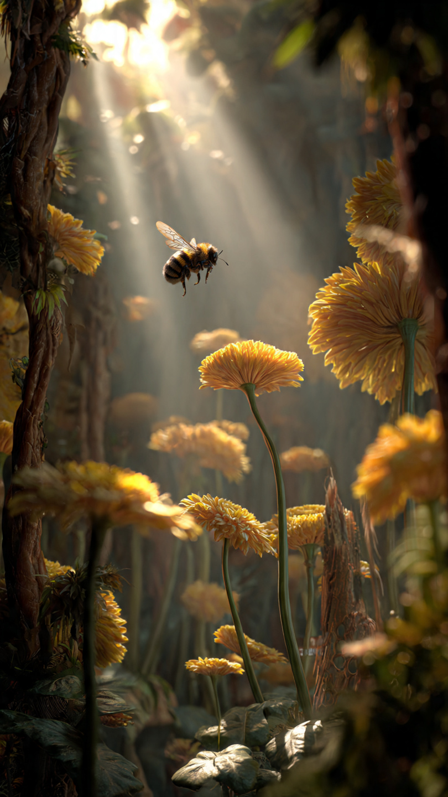
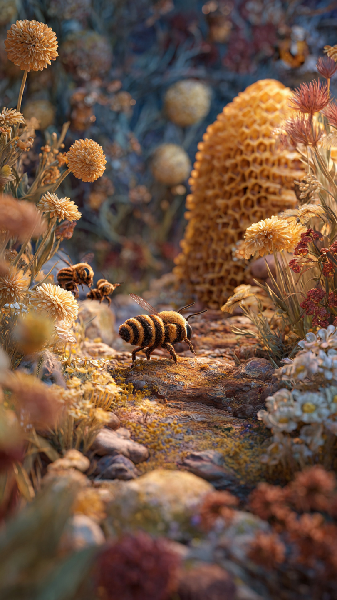

```html
🐝 النحلة التي أضاعت طريقها إلى الخلية | قصص أطفال
```
في حديقة كبيرة مليئة بالأزهار الملونة، كانت تعيش نحلة صغيرة اسمها نونو.
كانت نونو تحب الطيران بين الزهور وجمع الرحيق مع باقي النحل.
لكن كان لديها حلم مختلف...
كانت تريد أن ترى العالم خارج الخلية.
كانت ملكة النحل تقول لها:
"الغابة واسعة يا نونو، ويجب أن تعرفي الطريق جيدًا قبل أن تذهبي بعيدًا."
لكن نونو كانت متحمسة جدًا.
قالت:
"سأعود بسرعة، أريد فقط أن أرى أماكن جديدة!"
في صباح مشمس، خرجت نونو لأول مرة وحدها.
رأت أزهارًا لم ترها من قبل، وأنهارًا صغيرة، وأشجارًا ضخمة.
كانت سعيدة جدًا.
لكنها عندما قررت العودة...
حدث شيء لم تتوقعه.
نظرت حولها ولم تعرف أين هي.
كل الأشجار بدت متشابهة، والطرق أصبحت كثيرة.
قالت بخوف:
"أين أنا؟"
حاولت أن تتذكر الطريق، لكنها لم تستطع.
بدأت تطير بين الزهور بحثًا عن الخلية.
سألت الفراشات:
"هل تعرفون طريق خلية النحل؟"
لكن كل فراشة كانت تعيش في مكان مختلف.
مع غروب الشمس، أصبحت السماء برتقالية.
شعرت نونو بالتعب والخوف.
جلست فوق ورقة كبيرة وقالت:
"ربما لم يكن من الذكاء أن أذهب وحدي."
لكن في تلك اللحظة، سمعت صوتًا قادمًا من بين الأشجار.
كان صوت مخلوق صغير يقول:
"هل تحتاجين إلى مساعدة؟"
رفعت نونو رأسها...
ورأت صديقًا جديدًا سيغير رحلتها.
📷 الصورة رقم 1

نظرت نونو إلى المخلوق الصغير.
كان يرقة خضراء تعيش بين أوراق الأشجار.
قالت اليرقة:
"اسمي لولو، وأعرف كل طرق الغابة."
فرحت نونو وقالت:
"هل يمكنك مساعدتي في العودة إلى الخلية؟"
ابتسمت لولو وقالت:
"بالطبع، لكن علينا أن نصل قبل أن يحل الظلام."
بدأت نونو ولولو رحلتهما عبر الغابة.
كان الطريق طويلًا، لكنه كان مليئًا بالمغامرات.
مرّتا فوق جدول صغير، وساعدتا فراشة علقت بين الأغصان، وتعرفتا على طيور صغيرة أخبرتهما عن الأماكن القريبة.
مع كل خطوة، بدأت نونو تتعلم شيئًا جديدًا.
فقد اكتشفت أن طلب المساعدة ليس علامة ضعف.
بل هو دليل على الشجاعة.
بعد فترة، وصلتا إلى مكان مرتفع يمكن رؤية الغابة كلها منه.
قالت لولو:
"من هنا يمكننا تحديد مكان الخلية."
نظرت نونو بعيدًا، ولاحظت زهرة كبيرة كانت دائمًا بالقرب من منزلها.
قالت بسعادة:
"تذكرت الطريق!"
لكن قبل أن تعودا، سمعا صوتًا ضعيفًا.
كان هناك طائر صغير فقد عشه بسبب الرياح.
توقفت نونو وقالت:
"يجب أن نساعده."
قالت لولو:
"لكن الوقت يمر، وقد لا نصل إلى الخلية قبل الليل."
فكرت نونو قليلًا.
ثم قالت:
"العودة إلى المنزل مهمة..."
"لكن مساعدة صديق يحتاج إلينا أهم."
ساعدتا الطائر في بناء عش جديد.
وعندما انتهتا، حدث أمر مفاجئ...
ظهرت مجموعة من الطيور في السماء.
وكانت تعرف مكان خلية النحل.
📷 الصورة رقم 2

قادت الطيور نونو ولولو عبر السماء فوق الأشجار.
ومن الأعلى، استطاعت نونو رؤية خلية النحل تلمع بين الزهور.
شعرت بسعادة كبيرة.
قالت:
"لقد وجدتها!"
عندما وصلت نونو إلى الخلية، كانت جميع النحلات تبحث عنها بقلق.
اقتربت منها الملكة وقالت:
"لقد كنا خائفين عليكِ."
خفضت نونو رأسها وقالت:
"أنا آسفة، لقد خرجت دون أن أعرف الطريق جيدًا."
لكنها ابتسمت وأضافت:
"مع ذلك، تعلمت شيئًا مهمًا."
سألتها الملكة:
"ماذا تعلمتِ؟"
قالت نونو:
"أن العالم كبير وجميل..."
"لكن لا يجب أن نخوض المغامرات وحدنا، وأن طلب المساعدة يجعلنا أقوى."
شكرت النحلات لولو على مساعدتها، وأصبحت صديقة جديدة للخلية.
ومنذ ذلك اليوم، عندما كانت نونو تخرج لجمع الرحيق، كانت تستعد جيدًا وتخبر الآخرين بمكانها.
لكنها لم تفقد حبها للاكتشاف.
فقد أصبحت تستكشف أماكن جديدة، وتتعرف على أصدقاء جدد، وتساعد كل من يحتاج إليها.
وبعد سنوات، أصبحت نونو أشهر نحلة في الغابة.
لم تكن مشهورة لأنها طارت بعيدًا فقط...
بل لأنها عادت وهي تحمل معها دروسًا عن الشجاعة والصداقة.